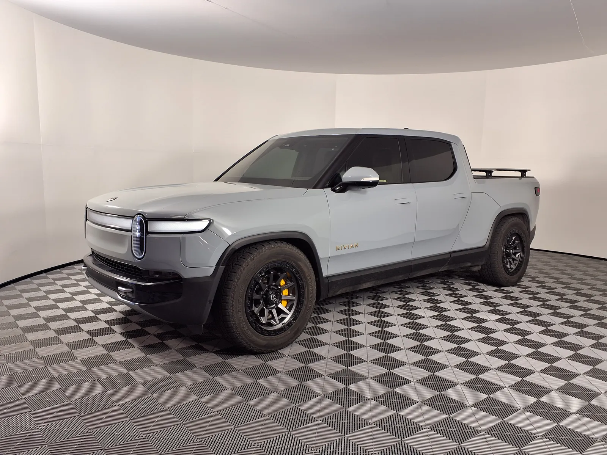
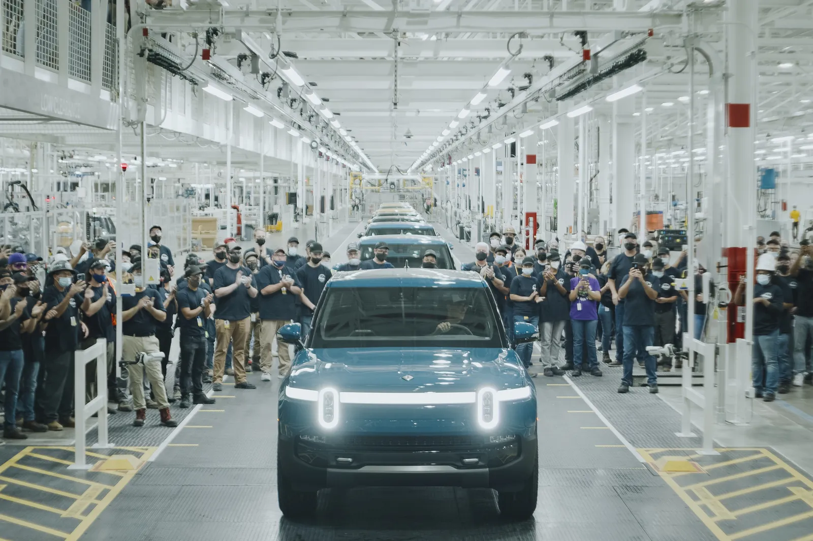

▲ 리비안의 CFO 클레어 맥도너가 10월 30일자로 사임한다고 발표했다 ⓒ Wikimedia Commons
주력 신차 R2가 막 도로에 풀리기 시작한 시점, 리비안의 곳간을 지키던 재무 수장이 떠난다는 소식이 전해졌다.
리비안은 최고재무책임자(CFO) 클레어 맥도너(Claire McDonough)가 2026년 10월 30일자로 사임한다고 발표했다. "새로운 기회를 추구하고 가족과 더 가까운 미 동부로 이주하기 위한" 결정이라는 설명이며, 회사 측은 재무 보고나 경영상의 이견에 따른 것이 아니라고 선을 그었다. 이 같은 사임 발표와 후임 체제 내용은 리비안이 2026년 8월 27일 미 증권거래위원회(SEC)에 제출한 8-K 공시를 통해 공식 확인된다.
1. 클레어 맥도너는 누구인가
맥도너는 2021년 1월 리비안에 합류해 약 5년 9개월간 재무를 총괄해왔다. 재직 기간 중 가장 굵직한 이력은 2021년 11월 137억 달러 규모의 리비안 기업공개(IPO)를 이끈 것이다. 당시 리비안 IPO는 그해 미국 증시 최대 규모 상장 중 하나로 꼽혔다.
이후에도 제조 운영 확장, 비용 절감 프레임워크 구축 등 회사의 재무·전략 전반에 관여해온 것으로 전해진다. 리비안 측은 이번 사임이 "어떠한 의견 불일치의 결과도 아니다"라고 공식 발표를 통해 밝혔다.
📍 이직처는 어디인가
맥도너는 매사추세츠에 본사를 둔 에너지 설비 기업 GE 버노바(GE Vernova)의 CFO로 자리를 옮기는 것으로 전해졌다. GE 버노바 측과 맥도너 본인의 소셜미디어를 통해 이 같은 이직 소식이 확인됐다.
▲ 리비안의 대표 SUV R1S. 맥도너는 R1S·R1T 양산 확대기를 거쳐 R2 양산 시점에 사임을 발표했다 ⓒ Wikimedia Commons
2. 후임 체제는 어떻게 짜이나
맥도너는 사임 발효일인 10월 30일까지 약 2개월간 인수인계를 담당할 예정이다. 그 이후에는 재무 담당 부사장 더렉 멀비(Derek Mulvey)가 임시 CFO를 맡는다.
| 시점 | 내용 |
|---|---|
| 2026년 8월 27일 | 클레어 맥도너 사임 공식 발표 |
| 2026년 8월~10월 | 맥도너, 인수인계 기간 |
| 2026년 10월 30일 | 맥도너 사임 발효 |
| 2026년 10월 30일 이후 | 더렉 멀비 임시 CFO 체제, 영구 CFO 후보 검토 진행 |
멀비 역시 2021년부터 리비안에 몸담아온 인물로, JP모건 부사장 출신의 재무 전문가로 전해진다. 리비안은 내부·외부 후보를 모두 검토해 영구 CFO를 선임할 계획이라고 밝혔다.
✅ 투자자 시각에서 볼 점
· 회사 측이 재무·회계 이슈와 무관하다고 강조한 만큼, 단기 실적 신뢰도에 미치는 영향은 제한적이라는 시각이 우세
· 다만 R2 양산 확대라는 중요한 시점에 재무 수장 공백이 생기는 것은 리스크 요인으로 지목됨
· 영구 CFO 선임 시점과 인물이 향후 관전 포인트
3. 리비안은 지금 어떤 상황인가
이번 CFO 교체는 리비안이 두 번째 주력 모델 R2의 양산을 본격화하는 시점과 겹친다. R2는 2026년 봄부터 일리노이주 노멀(Normal) 공장에서 생산되기 시작해, 같은 해 6월부터 고객 인도가 시작됐다.
| 항목 | 내용 |
|---|---|
| R2 생산 시작 | 2026년 봄, 일리노이 노멀 공장 |
| R2 고객 인도 개시 | 2026년 6월 |
| 2026년 인도량 가이던스 | 기존 6만 2,000~6만 7,000대 → 6만 5,000~7만 대로 상향 |
| 2026년 R2 인도 목표 | 2만~2만 5,000대 |
| 폭스바겐 합작 | 2024년 11월 체결, 58억 달러 규모 기술 협력 |
주가 측면에서는 2021년 IPO 당시 78달러였던 주가가 현재 10달러대까지 내려온 상태로 전해진다. R2가 저가형 라인업으로 판매 저변을 넓히는 데 성공할지가 리비안의 중장기 실적을 좌우할 핵심 변수로 꼽힌다.

▲ 리비안은 R1S·R1T에 이어 R2 양산을 확대하며 판매 저변을 넓히고 있다 ⓒ Wikimedia Commons
4. 관전 포인트 — R2 램프업과 재무 리더십 공백
R2 양산 확대는 리비안의 손익분기점 도달 여부를 가늠할 중요한 시험대다. 이런 시점에 재무 수장이 바뀌는 만큼, 새 CFO 선임이 지연되거나 인수인계 과정에서 잡음이 생길 경우 투자자 신뢰에 영향을 줄 수 있다는 우려도 나온다.
✅ 앞으로 지켜볼 변수
· 영구 CFO 선임 시점과 후보군(내부 승진 vs 외부 영입)
· R2 생산 램프업 속도와 2026년 인도 목표(2만~2만 5,000대) 달성 여부
· 조지아 신공장 건설 진행 상황
· 폭스바겐 합작사업의 후속 성과 발표 여부
리비안의 공식 발표 자료는 SEC 공시를 통해 확인할 수 있다. SEC 공시 원문 바로가기

▲ 리비안의 일리노이 노멀 공장. R2 양산 확대가 CFO 교체와 같은 시기에 진행되고 있다 ⓒ Wikimedia Commons
5. 요약
리비안의 CFO 클레어 맥도너가 10월 30일자로 사임한다. "새로운 기회를 추구하고 미 동부로 이주"하기 위한 결정으로, 매사추세츠 소재 GE 버노바의 CFO로 이직하는 것으로 전해졌다. 재무·경영상의 이견에 따른 것은 아니라고 회사 측은 설명했다.
재무 부사장 더렉 멀비가 임시 CFO를 맡고, 영구 CFO는 내부·외부 후보를 검토해 선임할 예정이다. 맥도너는 137억 달러 규모 IPO를 이끈 5년 9개월의 재직을 마무리한다.
이번 교체는 R2 SUV 양산이 본격화되는 시점과 맞물려 주목된다. 2026년 인도량 가이던스가 상향 조정되는 등 사업은 확장 국면이지만, 재무 리더십 공백이 어떻게 관리되는지가 관전 포인트다.